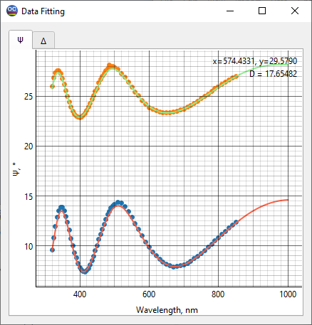

Data Fitting
The Data Fitting window displays the fitting of the loaded measurement data to the corresponding theoretical characteristics. Various parameters (for example, ellipsometric angles Psi and Delta) are displayed separately. To switch between the characteristics, the corresponding tabs in the upper part of the window can be used. Crosses represent the measured data, while solid lines indicate the characteristics calculated using the current layer (substrate) model.
D = … presents the discrepancy value.

Right-clicking in the active Data Fitting window opens a context menu that provides access to the Chart Editor and to the Export Chart, Save As, Print, Copy operations.

With the Copy Special… command, it is possible to recompute the displayed theoretical curves on another grid and place the result into the Windows Clipboard for further use. The configuration dialog for the grid settings is shown below:
Plot Ranges activates the corresponding tab of the Characterization Options dialog.
Silent check mark suppresses screen updates during the computations.
Measurement Peaks… command invokes Measurement Peak List dialog.
Model Peaks… command invokes Model Peak List dialog.
Note: You also could rearrange the window layout in order to display several different characteristics at once. It is even possible to convert one of the tabs to an additional window.